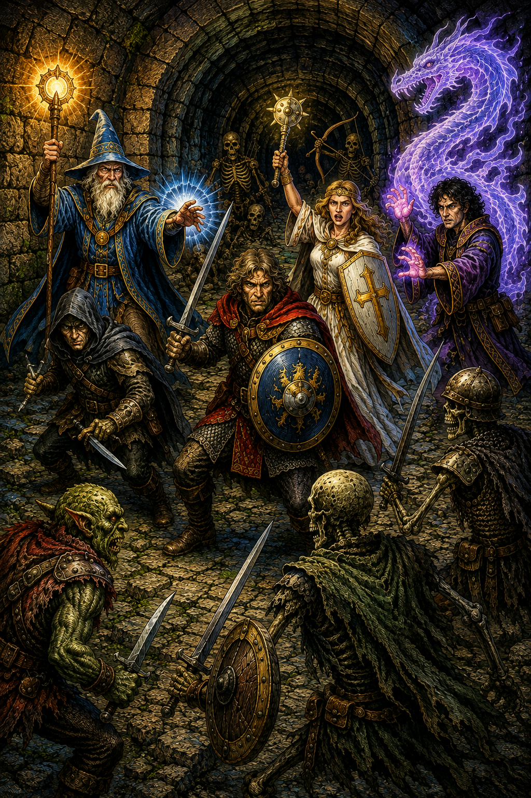
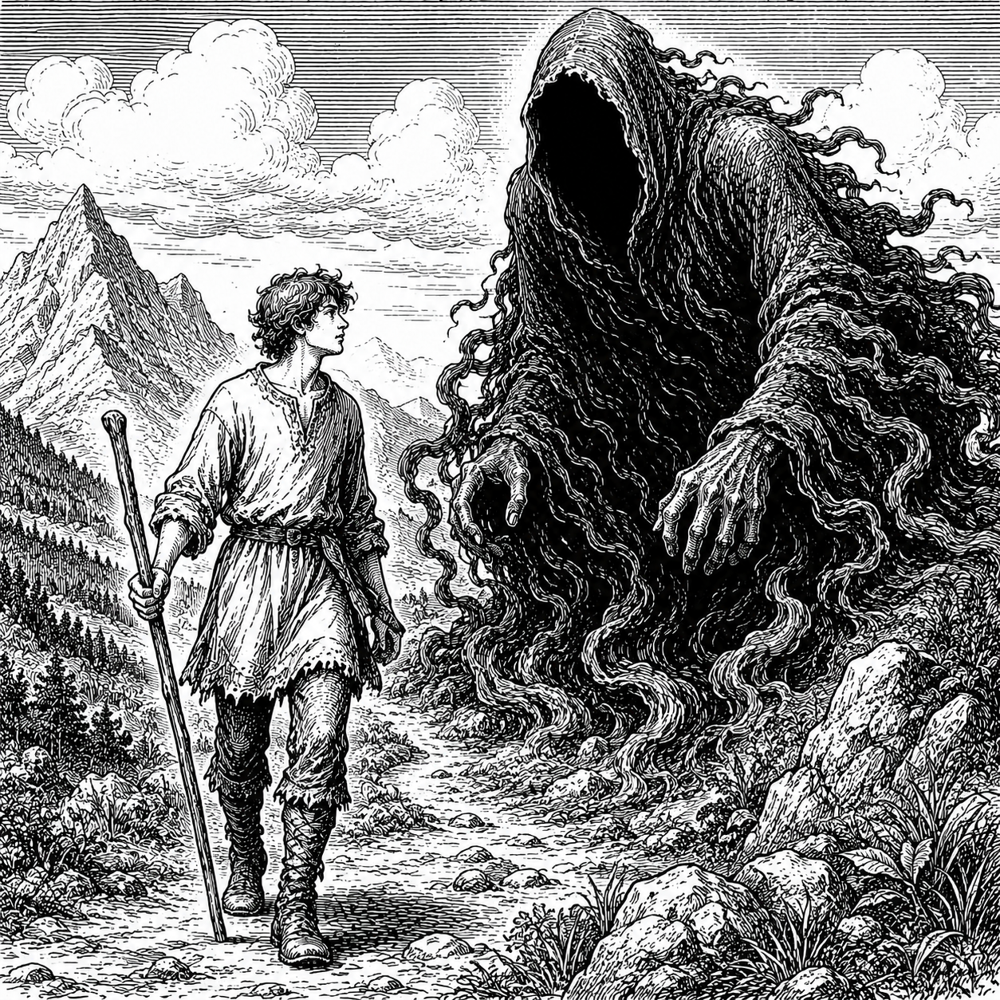

Fee-fi-fo-fum.
You already know the next line. So does almost everyone else reading this, and none of us can remember being taught it. That is the strange thing about the oldest stories. They get into people early and they stay, long after we have forgotten which book they came from or who read them out loud to us.
I have been chasing that feeling my whole life.
What I Checked Out
From elementary school all the way through high school, almost everything I carried out of the library was mythology, fairy tales, or folklore. Nobody assigned it. That was just where I went. Everything else I picked was science fiction and fantasy too. The movies, the paperbacks, even the magazines. I was an avid Dragon magazine reader.
I did not think of it as research, because it wasn't. But there is not much difference, at that age, between reading everything in one section of a library and studying it.
I probably read The Crystal Cave by Mary Stewart a dozen times, and her whole series about Merlin was fantastic fuel. The Misenchanted Sword by Lawrence Watt-Evans sent me down his path and I read everything he published. He is probably my favorite author.
Stuck Behind the Screen

Then came Dungeons & Dragons, and I usually got stuck being the DM.
I say stuck, but I never really minded. Being the DM meant I controlled the story. It meant I got to spin my own tales instead of walking through someone else's, and it meant doing it live, in front of people who could tell right away whether it was working.
That is where I actually learned to tell a story. Not in a class and not out of a book about writing. I learned it from a table of friends who would wander off in the wrong direction the second I got attached to a plan, and from having to make the wrong direction interesting anyway. A novel gives you time to go back and fix things. A game does not. You find out fast what holds people and what does not.
One of my favorite sessions came out of Dragon magazine. It was "The Dancing Hut" by Roger E. Moore, from issue 83, though we only ever called it Baba Yaga's hut. To this day I can remember my players subduing those giant chicken legs to get the thing to lower to the ground. "No Scott, you can't cut off the legs and barbecue them!" It was a blast.
Sheffield Opened a Door I Did Not Know Was There
When I finally sat down to write a novel, what came out was science fiction. Sheffield is a sci-fi story and it is entirely my own. No source tale underneath it, nothing borrowed. I built it from scratch and I was happy there.
But books have a way of shaking other books loose. Ideas started spinning off it faster than I could use them, and chasing those ideas meant digging back through my own roots to figure out what actually made me tick. That is when I found the fantasy sitting underneath everything, where it had been the whole time.
Tatterhood

I was surprised when I saw how closely the story of the 1998 Pixar film A Bug's Life borrowed from the 1954 Kurosawa film Seven Samurai. I set out to find some obscure story that I could try to do the same thing with, and that led me to Tatterhood.
I could not believe I had never heard of it. Here was this fantastic story, complete and strange and sitting right out in the open, and it had somehow gotten past me for my entire reading life. That happens more than you would expect with folklore. A handful of tales get retold until they are basically wallpaper, and everything else waits on the shelf.
I knew right away that I wanted to retell it. The hard part was the balance. I wanted a modern twist, but I did not want to bury the original underneath it. Change too much and you have written something else and lost the reason you started. Change too little and you have just retyped a story that already exists. Somewhere in between is a version a reader who knows Tatterhood will recognize, and a reader who has never heard of it will not need to.
Tatwitt guided me through the whole thing. By the time she had finished telling me her story, I already knew I wanted to do it again.
The One Who Went Forth to Learn What Fear Was

So I went hunting for another obscure one, and I found The Story of the Youth Who Went Forth to Learn What Fear Was, from the Brothers Grimm.
A boy who cannot feel fear leaves home specifically to learn how. Everyone around him assumes something is broken in him. He does not especially think so. He just wants to find out what this thing is that everybody else keeps talking about.
That is the spine of The Emotion Engine.
It is buried deeper this time. With Tatwitt I wanted the original showing through the seams. Here I let it sink further under the surface. Some pieces are obvious once you know to look for them. Others are not, and I am fine with that. Nobody should read The Emotion Engine and feel like they missed a footnote. But if you happen to know the Grimm story, there are things in there waiting for you.
I am having a blast with this one.
Still on the Shelf
There are more of these than I am going to get to.
I want to write a D&D type book, and I have wanted to since back when I was the one running the table. I want to build my own fairy tales instead of borrowing them and see whether I can make something feel that old from scratch. I want to write a vampire story, and I already have the bones of that one, but there are more pressing books ahead of it in line. And I want to write about my faith in Jesus, which is its own kind of old story and its own kind of hard.
For now my head is down and my fingers are on the keyboard, and The Emotion Engine is the only thing in front of me. It is still on track for November 2026.
Once it is finished though, I doubt it will be long. There is always another one out there that nobody has read in a hundred years, waiting for a fresh set of clothes.
Something new, from something old.
—Charles